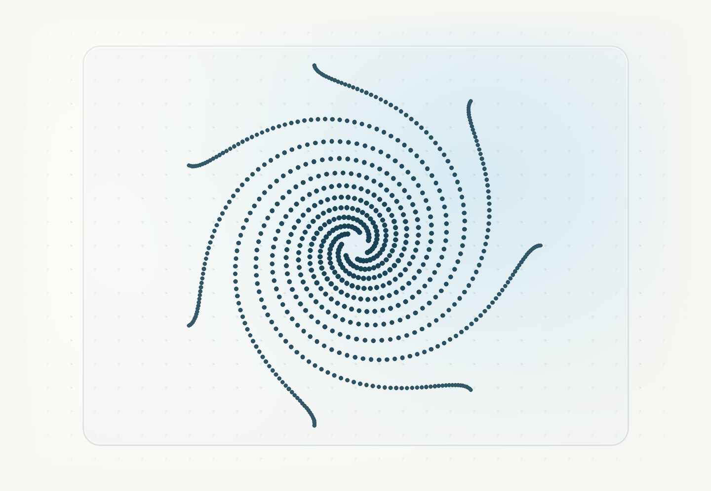

AI application
AI4PDPA
SUTD Capstone team project for Singapore SMEs, with a PDPA assistant that cites its sources, staff lessons and quizzes, and an analytics dashboard.
Engineering Field Notes

AI application
SUTD Capstone team project for Singapore SMEs, with a PDPA assistant that cites its sources, staff lessons and quizzes, and an analytics dashboard.
Applied machine learning
Four PyTorch models tested on rare freeway anomalies, with held-out results, saved checkpoints, and CPU reproduction steps.
Interactive simulation
Discrete particles trace continuous-looking waves. Adjust the streams, twist, and speed to see how the pattern changes.